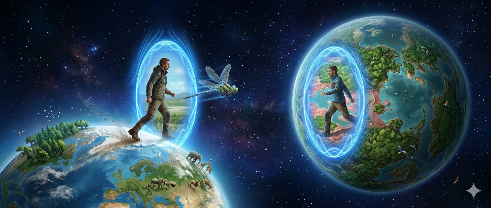
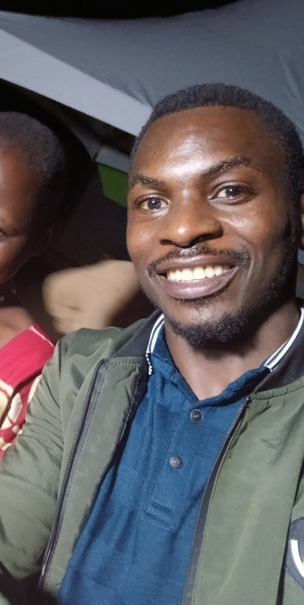

Unveiling New Frontiers in Theoretical Modeling


Seruuma is a researcher and theorist dedicated to expanding the boundaries of physical and theoretical systems. With a focus on complex modeling, his life's work culminates in the Seruuma Manuscript, a foundational text exploring the mechanics of our universe.
Graduated with a Bachelor’s Degree in Electrical & Electronics Engineering at Makerere University, Kampala Uganda in 2019, I have since honed skills as a self-engineered, self-reliant and self-employed youth with an ever evolving mindset that is rooted in imagination and a spirit of enterprise. Since 2006, while attending my Ordinary Secondary level, I have been consumed with a deep desire to study new things irrespective of the subject, immersing myself in a passionate reading that encompasses a broad-spectrum of subjects including and not limited to; Science, Arts, Religion, Philosophy, Astronomy, Parapsychology, Politics, Literature & Poetry, Warfare, Economics, Psychology, Sports & Games, Divine & Hermetic teachings, etc. In a special way and with such intense passion, I devoted myself to building a flying aircraft, a journey that begun in my early Ordinary Secondary School Education. Culminating in a focused accumulation of Knowledge in related fields, more particularly Aerodynamics, Aeronautics, Software engineering, Electronics and Telecommunications. Just recently in 2023, for the first time my personally developed and built Remote Controlled Aero-plane took-off from ground and although this flight wasn’t that much refined, the greater success of overcoming ground resistance and getting off ground had been registered. So-far, I can confidently boost of having a profound understanding of Aeronautics, with a capability to develop and build a flying aircraft at will. Early this year 2026, in the midst of a daily devotion to a housing constructions project that I have been engaged in for two years, I received a profound realization of truths about nature and existence that if well understood and utilized could actually enable humanity to travel across galaxies in an individual man’s lifetime, bridging vast cosmic distances that light it-self takes tens of thousands of years to travel. I had really never thought even for a single moment in the whole of my growing-up life that I could actually be an originator of such solutions to humanity’s puzzling questions. I just loved learning and never planned to reach these realizations but now that they have come, I choose to write them down, to record them for humanity, to unveil and explain the secrets to humanity.
The Seruuma Model represents a paradigm shift in how we visualize interstellar dynamics, vortex sources, and unitary fields. By synthesizing theoretical frameworks into actionable visual models, it provides a unique lens through which we can view the architecture of space and time.
Detailed publications, including full technical breakdowns and archives, are available via Zenodo.
View Publications on Zenodo